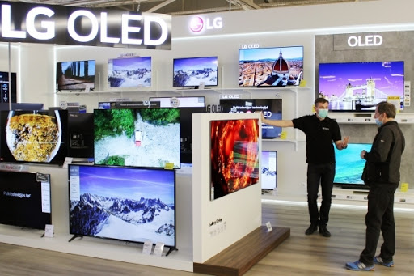
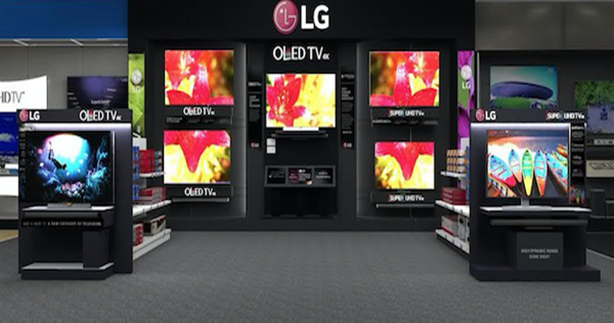
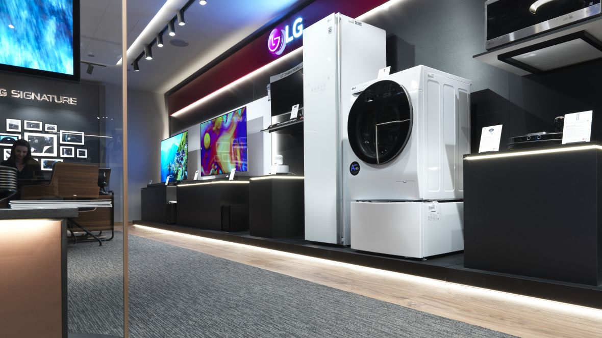

LG TV, Computers, Appliances, Air Conditioners and Mobile Phones Life's Good with LG and its range of products. Begin by transforming your TV viewing experience and enjoy the thrill of premium TV/Audio/Video, with LG South Africa’s superior TV viewing technology. Enjoy the next level TV viewing with widest range of Nanocell TVs, LED and OLED TVs , 4K Resolution, and Smart TV. Now being in touch with your loved ones is easier with LG’s stylish and advanced mobile phones and accessories ranging from smartphones , tablets, mobile accessories and smart watches. Now browse guilt free with powerful operating system to your rescue and shine professionally with latest computer products powered by Blu-ray technology. Your household chores will never seem a burden with LG’s premium home appliances. Choose from microwave ovens , Side By Side Refrigerators, Dishwashers, top and front load washing machines including the revolutionary Twin Wash machines, air conditioners, air dehumidifiers, LED lighting and host of other efficient functional devices. With LG’s efficient Water Purifiers and Vacuum Cleaners, you will always remain fit and healthy, free from all harmful bacteria. Keep track of every move and let LG’s professional equipment leave a lasting impression behind your back. The range includes LG commercial TVs, Commercial monitors, projectors ,video conference call systems and security cameras. Breathe a sigh of relief and experience bacteria-free purified air with LG South Africa’s innovative air conditioner technology. Be it the mosquito repellent split air conditioner or superior functioning of commercial and floor standing air conditioners, ceiling cassette, ceiling concealed duct type and HRV cooling solutions.
  